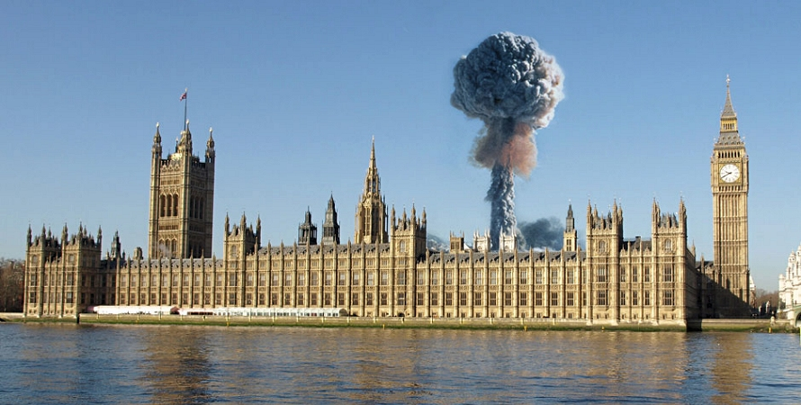

More than 300 megatons of nuclear bombs were detonated over Britain in the space of a 16-hour exchange. Many cities were completely destroyed. Millions died in the immediate aftermath of the attack from the immense heat and blast of the explosions, millions more have survived and now suffer from radiation sickness. The central government is non-existent. Under ground, sheltered in the blast-proof bunkers, remain 12 regional commissioners with their staff, ready to come out and take charge of the post-apocalyptic society. How do they restore order and begin to rebuild civilisation?
In a scenario that wouldn't be out of place in a post-apocalyptic science fiction story, during the 1980s, at the height of nuclear paranoia, UK Home Office was seriously entertaining the idea of recruiting psychopaths to keep order after a nuclear strike.
Jane Hogg, a scientific officer in the Home Office, envisaged the police would be busy helping "inadequate" people in disaster-struck areas, and suggested that another group could be recruited to help keep order.
Psychopaths would be very good in crises as they have no feelings for others or moral code
"It is generally accepted that around 1% of the population are psychopaths..." she wrote, before continuing "...these are the people who could be expected to show no psychological effects in the communities which have suffered the severest losses."
Hogg further suggested that psychopaths would be "very good in crises" as "they have no feelings for others, nor moral code, and tend to be very intelligent and logical".
Her bosses remained unconvinced. One of them commented on her recommendation: "I am not at all sure you convince me. I would regard them (i.e. psychopaths) as dangerous whether or not recruited into post (nuclear) attack organisation."
For better or worse, the ‘psychopath option’ eventually didn't make it into the government contingency plans covering the first six months after the hypothetical nuclear exchange of World War III.